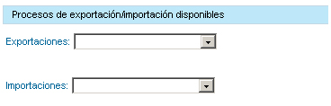
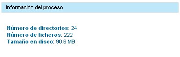

|
Mediante este proceso, el usuario administrador puede eliminar los datos generados en los procesos de exportación, importación y clonación (compuesto por una exportación y una importación). Debido al tamaño que puede alcanzar uno de estos procesos en disco (bases de datos y repositorios documentales), es recomendable borrar la información en caso de no necesitarla.
Descripción de elementos:
Seleccione una importación o una exportación del desplegable correspondiente para obtener datos sobre el proceso.
 Una vez seleccionado el proceso, se mostrará automáticamente información sobre el proceso (número de directorios, número de ficheros y espacio en disco).  Para borrar un proceso de exportación o de importación, seleccione el proceso del desplegable correspondiente y pulse sobre el botón Eliminar. |
||||